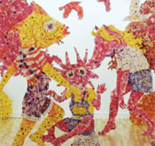

|
|
ISSUE #1
|
|
The Undigested World Itself Kristi Malakoff grew up in Naramata, in the south Okanagan, and graduated from Penticton Secondary School in 1992. In 2001 she enrolled in Emily Carr Institute of Art and Design, where she graduated with a BFA in 2005. Since then her art career has been on a steady ascendancy on a national, and an increasingly Gary Pearson On the Lake I think most, if not all, artists would say that at the very heart of creating is a sense of the wild, of traveling unfamiliar territory, of a journey where the spirit feels at home. For many artists, as well as naturalists, hikers, guides, and hunters, no place captures that feeling of wonder and spiritual fulfillment more profoundly than the wilderness area of the Muskwa-Kechika.
The Muskwa Assemblage is a formation inside the Muskwa-Kechika wilderness which stretches from the Toad River area in the north to the Tuchodi Lakes in the south; some of its outcrops can be reached with a short hike from the Alaska Highway. It is one of those geological phenomena—such as unconformities, island arcs, and fossil Writing Lake Superior In every part of every living thing Search: ken belford/invisible ink Ken Belford’s career as a poet has followed an unusual path. Since the mid-1960’s, he lived exclusively and reclusively in the woods, mountains, and small northern towns of British Columbia. He has published only sporadically with small BC presses, and more recently with his own limited-run chapbook series off-set house and Vancouver’s Nomados Literary Publishers. “Woodsman,” “guide,” and “outdoorsman” have been the convenient but narrow definitions that preface most discussions of his poems. CUT BLOck We’re here to repopulate the woods. We tell our young selves this. Most of the thirty of us have seen pictures of clear-cut logging and we care. Still clean, still upright, keen to jump out of the crew cabs and plant some trees; we are wide-eyed idealists: it’s that straight-forward. But the pictures of clear cuts we knew had no sense of scale; so we’re a bit thrown when we walk into the first open ground of the season. It covers football fields and soccer fields and more, with a few basketball courts tucked around the edges, and we’re told this is a small one...
|
Lake publishes fiction, poetry, critical essays, interviews, reviews and visual arts related to the environment.
|
Lake - Journal of Arts and Environment
Faculty of Creative and Critical Studies at the University of British Columbia Okanagan |
| web design by Idea Bureau |